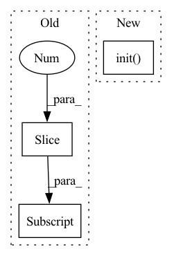

Pattern ID :25646

Before Change
from datasets import load_dataset
try:
train_dataset = (
load_dataset("glue", "stsb", split="train[:1%]").to_pandas().iloc[:20]
)
dev_dataset = (
load_dataset("glue", "stsb", split="train[1%:2%]").to_pandas().iloc[:20]
)
except requests.exceptions.ConnectionError:
After Change
}
ray.shutdown()
ray.init()
automl.fit(
X_train=X_train, y_train=y_train, X_val=X_val, y_val=y_val, **automl_settings
)
automl.predict(X_val)
In pattern: SUPERPATTERN
Frequency: 4
Non-data size: 3
Instances
Fragment ID: 77917824
Project Name: microsoft/flaml
Commit Name: 569908fbe64f08b19fbef7487513b81d62e6eaba
Time: 2022-01-14
Author: wang.chi@microsoft.com
File Name: test/nlp/test_autohf_regression.py
M Class Name: AnonimousClass
N Class Name: AnonimousClass
M Method Name: test_regression(0)
N Method Name: test_regression(0)
M Parent Class:
N Parent Class:
M File Name: test/nlp/test_autohf_regression.py
N File Name: test/nlp/test_autohf_regression.py
M Start Line: 17
M End Line: 18
N Start Line: 16
N End Line: 56
'>
Before Change
with torch.no_grad():
means, buckets, dists = kmeans(x, means, training=self.training, init=not self.initted)
indices = distribution(dists, window_size)
indices = indices.contiguous().view(*indices.size()[:2], -1)
routed_means = batched_index_select(expand_dim(means, 0, b), buckets)
loss = F.mse_loss(x, routed_means) * self.commitment
After Change
self.new_means = None
def forward(self, x, update_means = False):
self.init(x)
b, dtype = x.shape[0], x.dtype
means = self.means.type(dtype)
x = F.normalize(x, 2, dim=-1).type(dtype)
'>
Fragment ID: 77917825
Project Name: lucidrains/routing-transformer
Commit Name: 2042adb06111339b86814500f0c389759b8f6cdf
Time: 2020-05-27
Author: lucidrains@gmail.com
File Name: routing_transformer/routing_transformer.py
M Class Name: Kmeans
N Class Name: Kmeans
M Method Name: forward(3)
N Method Name: forward(3)
M Parent Class: nn.Module
N Parent Class: nn.Module
M File Name: routing_transformer/routing_transformer.py
N File Name: routing_transformer/routing_transformer.py
M Start Line: 396
M End Line: 410
N Start Line: 367
N End Line: 384
'>
Before Change
observation = observation["observation"] if isinstance(observation, dict) else observation
// load positions
goal_position = observation[0:3]
poker_position = observation[3:6]
gripper_position = self.get_accurate_gripper_position(observation[6:9])
self.initialize_positions(poker_position, gripper_position)
After Change
:return reward: (float) Reward signal for the environment
observation = observation["observation"] if isinstance(observation, dict) else observation
poker_position, gripper_position, poke_vector, aim_vector = self.init(observation)
// align = poke_vector.get_align(aim_vector)
align = np.dot(self.set_vector_len(poke_vector.vector, 1), self.set_vector_len(aim_vector.vector, 1))
'>
Fragment ID: 77917826
Project Name: incognite-lab/mygym
Commit Name: 2f1c0aa857f09b4521dec2c7afbd652b3ac90334
Time: 2021-08-17
Author: gupit@seznam.cz
File Name: myGym/envs/rewards.py
M Class Name: DualPoke
N Class Name: DualPoke
M Method Name: compute(2)
N Method Name: compute(2)
M Parent Class: Reward
N Parent Class: Reward
M File Name: myGym/envs/rewards.py
N File Name: myGym/envs/rewards.py
M Start Line: 926
M End Line: 976
N Start Line: 926
N End Line: 958
'>
Before Change
tokenizer = BertTokenizer.from_pretrained(TOKENIZER_DIR)
transformer = Transformer.load_from_checkpoint(TRANSFORMER_CKPT)
transformer.eval()
seoul2jeju = load_seoul2jeju()[:10]
seouls = [seoul for seoul, _ in seoul2jeju]
jejus = [jeju for _, jeju in seoul2jeju]
X = InferInputsBuilder(tokenizer, config["max_length"])(srcs=jejus)
tgt_ids = transformer.predict(X)
After Change
args = parser.parse_args()
config = load_config()
config.update(vars(args))
with wandb.init(entity="eubinecto", project="dekorde") as run:
artifact = run.use_artifact("transformer:latest")
artifact.checkout()
transformer_ckpt, tokenizer_dir = transformer_paths()
'>
Fragment ID: 77917821
Project Name: eubinecto/dekorde
Commit Name: fd3b05ba0d98e727d7c58233ac0e8c0449890275
Time: 2021-12-06
Author: eubinecto
File Name: main_predict.py
M Class Name: AnonimousClass
N Class Name: AnonimousClass
M Method Name: main(0)
N Method Name: main(0)
M Parent Class:
N Parent Class:
M File Name: main_predict.py
N File Name: main_predict.py
M Start Line: 10
M End Line: 19
N Start Line: 11
N End Line: 27